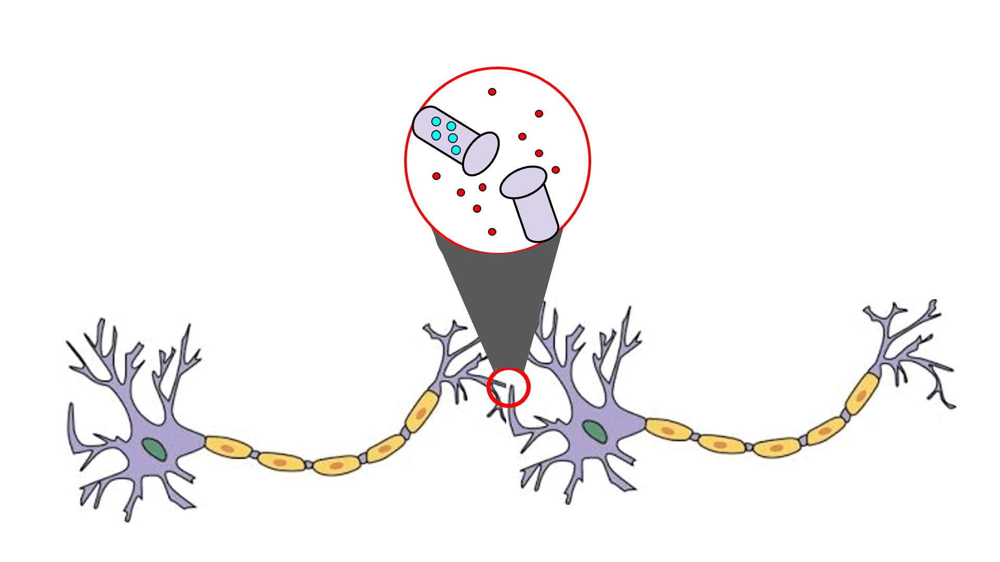
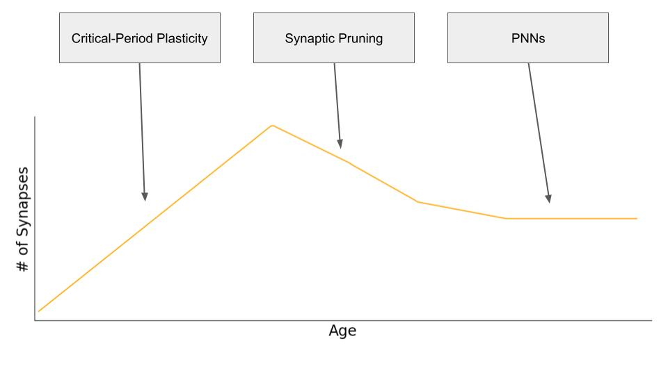

Background
Memory
The word “memory” means different things depending on who you ask. In psychology, it is pretty much what most people think of: stored experiences and mental processes that we can encode, keep, and bring back later. These might be memories of graduating from high school, eating your favorite meal, or where you last parked your car.
In neuroscience, memory often refers to something a little different. It is about the physical changes that happen in neurons, the smallest building blocks of the brain, that alter how they behave. As a loose example, hearing your favorite song today might excite a particular neuron, but ten years from now that same song might barely make it react. Neurons can change their behavior based on what they have been through.
There’s a neat connection between memory in the whole brain and memory in a single neuron. We make decisions based on past experiences and individual neurons contribute by ‘remembering’ what’s happened to them and adjusting their connections and structure. Tiny changes add up when many neurons do this together and give rise to the memories and behaviors we experience.
Information through Neurons
Neurons pass information to each other using tiny electrical pulses. At their meeting points (synapses), the electrical signal from one neuron causes the release of chemical messengers. These chemicals bind to the next neuron, open tiny channels on the next neuron’s surface, and allow ions to rush in. If enough ions enter, another electrical pulse is sent along, and the cycle repeats.

The Brain’s Shape Shifting Trick
Plasticity is the brain’s ability (at the level of individual neurons, neural circuits, and the whole brain) to change and reorganize itself. It's how we can adapt, learn, and even 'rewire' after brain injury. It’s not a metaphor or abstraction. Neurons literally change their structure. They can grow new branches, make stronger links to each other, and form entirely new connections.
Plasticity is supercharged when we are young. During early development, neurons make connections at a rapid pace as we learn language, develop depth perception, adopt social norms, and figure out how to move and control our body. But as we get older that ability slows down. There is some truth to the “old dog can’t learn new tricks” saying. One reason for this is the increase of something called perineuronal nets (PNNs).
PNNs
PNNs are structures that wrap around neurons and help stabilize their existing connections. Just like neurons, these structures are as real and physical as you, me, and the device you’re reading this through. They are like a fine net surrounding a neuron and have the consequence of making it harder for new connections to form. This is one way the brain limits plasticity in adulthood.
During early development, neurons make connections at a rapid pace as we acquire skills, facts, and social understanding. Later, the brain trims away weaker or duplicate connections in a process called synaptic pruning. PNNs help maintain the stable set of connections that remain.

Even with PNNs in place our brains can still change. It just happens more slowly.
You might wonder why the brain goes through all the trouble of making so many connections only to cut them back later. It's similar to writing a long research paper. First you gather all the information you can, then you cut out what is less relevant so the paper is clear and focused. Without the first step of overbuilding, you might miss something important.
Simply keeping every connection would not work either. A paper with every relevant reference would be messy and repetitive. In the brain, too many redundant connections can cause inefficiency and even lead to developmental disorders like autism spectrum disorder. All of this is to say that PNNs are not strictly a bad thing. They provide important structural support to the brain’s wiring, preserve the skills we developed early in life, help control microglia activity (the brain's immune cells which are important for preventing inflamation and slowing disease progression) and protect against neurodegeneration.
So we would not want to remove PNNs entirely. But if we could selectively remove them it might help the brain adapt to new challenges or fight off infections more effectively.
Removing PNNs
Hopefully I’ve illustrated that improving memory/plasticity is not as simple as just removing PNNs and that at this moment, removing PNNs for plastic gain is highly experimental. However, it has been done! Researchers have shown that PNN removal helps with memory through a novel object recognition test in rodents. A brief explanation of this can be found below.
There is other evidence that PNN removal can better memory but likely not enough to outweigh their sheer importance to stable, efficient neuron circuits. Still, their unique role and potential is exciting enough for research to continue.
This post grew out of a presentation I gave for BIOS442, a journal club style course. My topic was novel ways of removing PNNs as described in Venturino et al.’s paper "Microglia Enable Mature Perineuronal Nets Disassembly Upon Anesthetic Ketamine Exposure Or 60-Hz Light Entrainment In The Healthy Brain". I didn’t touch on these methods in this post but if this topic caught your interest I recommend giving the paper a look: link.